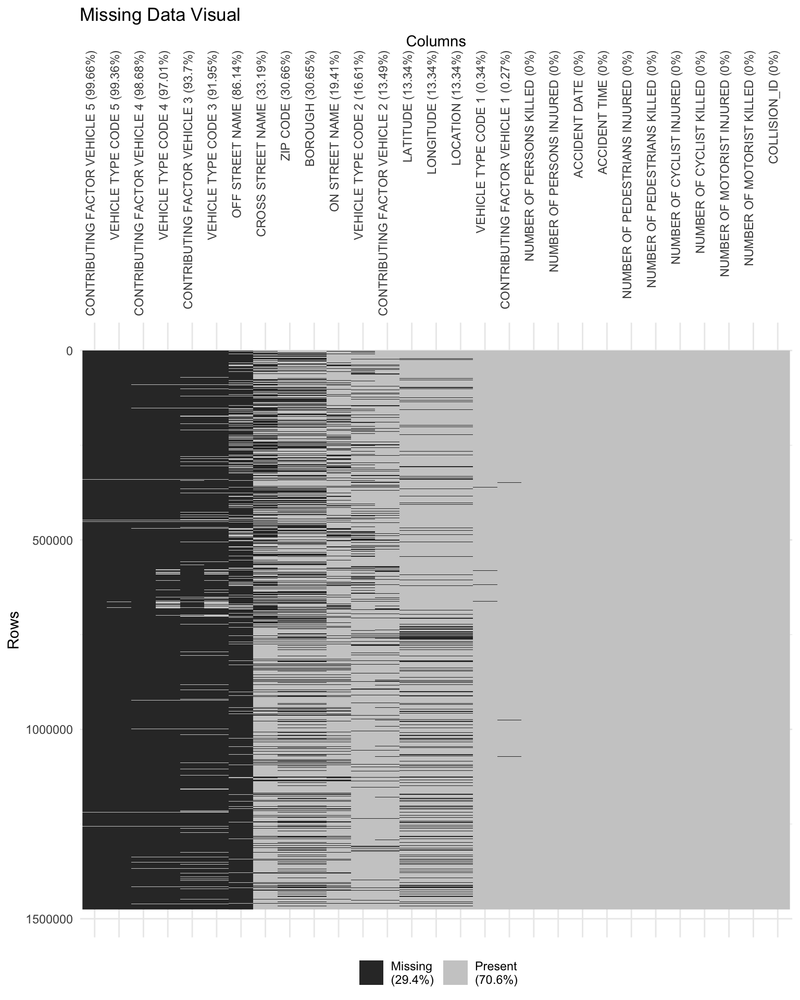
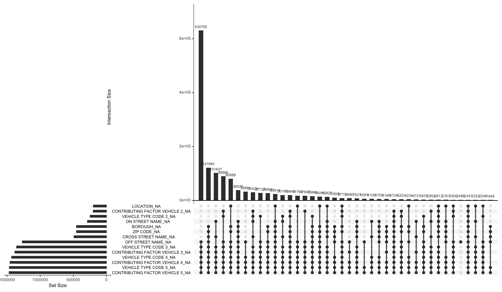
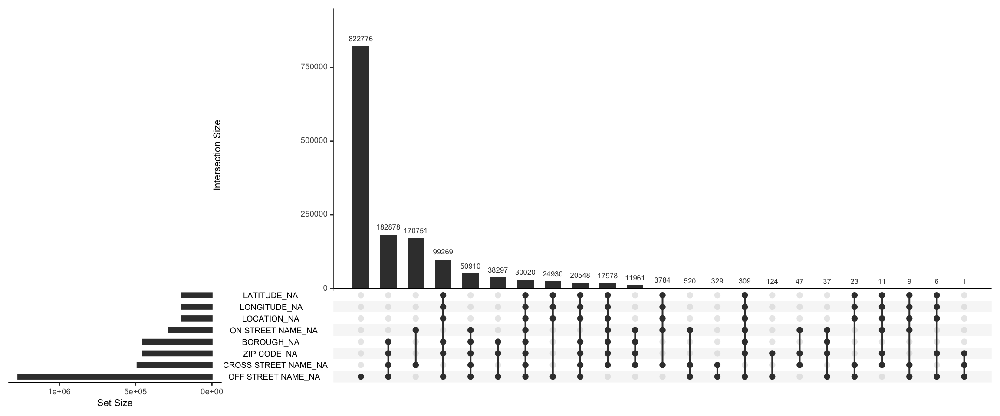
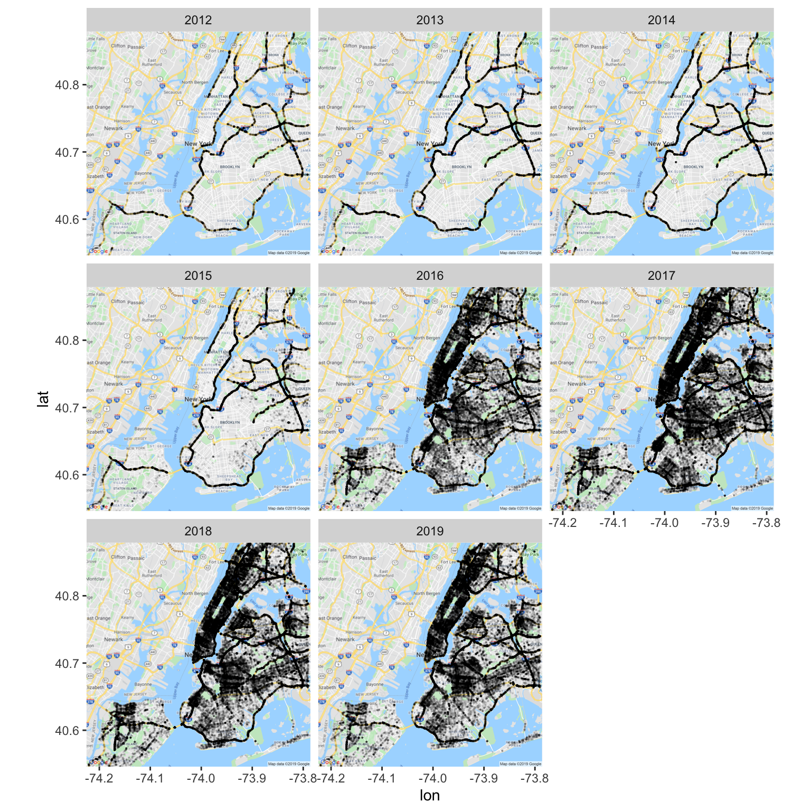

Chapter 4 Missing Value Analysis
4.1 Why to analyse missing values?
In this section, we will try to analyse trends in missing values of the datset. It is important to analyse missing values’ trends as they might tell something about the question we are trying to investigate, and also to see if we will be able to investigate the questions under consideration. If the data required for investigation is missing, we will have to take the help of external data sources. In other words, inspecting the trends among missing values will give a direction to our investigation.
4.2 Visual representation of missing values in dataset

This plot gives us a visual representation of how the missing values look in the dataset. On the y-axis, we can see the rows and on the x-axis we can see the columns. 29.4% of overall data is missing, which is represented by black colour in the plot. It is clear from the plot that columns related to different vehicles involved in the accident are among the ones with the highest missing values. This further reinforces our hypothesis in the previous analysis that majority of accidents involve at most 2 vehicles.
There might be a possibilty that we are not able to visualise the columns which have less number of missing values. Thus, we will now look into the summary table for the missing values of the data.
## # A tibble: 9 x 3
## variable n_miss pct_miss
## <chr> <int> <dbl>
## 1 ACCIDENT DATE 0 0
## 2 ACCIDENT TIME 0 0
## 3 NUMBER OF PEDESTRIANS INJURED 0 0
## 4 NUMBER OF PEDESTRIANS KILLED 0 0
## 5 NUMBER OF CYCLIST INJURED 0 0
## 6 NUMBER OF CYCLIST KILLED 0 0
## 7 NUMBER OF MOTORIST INJURED 0 0
## 8 NUMBER OF MOTORIST KILLED 0 0
## 9 COLLISION_ID 0 0This summary table gives us the number and proportion of missing values in each column. We can see that there are certain columns which do not have any missing values. These columns will help us in our analysis where we have to count the number of rows but the other columns are missing, thus facilitate in showing missing values or no values in other columns. Such columns can be COLLISION_ID, ACCIDENT DATE.
4.3 Missing values pattern analysis: whole data
Here, we are starting by analysing the missing values’ patterns of the full dataset. 
Guidelines to interpret the graph: - Here, the horizotal bar chart (bottom-left) shows the total number of missing values in each column (written on it’s y-axis). - The lines with dots (in the graph at the bottom) shows the patterns in missing values. On the line, where dots are present, it means that all those corresponding columns (on it’s y-axis same as the previous point) are missing in that pattern. The number of missing values in that pattern is given by the vertical bar chart at the top. - The graph will get clearer in the analysis below.
Using the plot, we are able to discern that: 1. The pattern where maximum number of values are missing is the one with “off street name”, “vehicle type code 3”, “vehicle type code 4”, “vehicle type code 5”, “contributing factor vehicle 3”, “contributing factor vehicle 4”, “contributing factor vehicle 5”, with a total of 630756 rows. This accounts for approximately 49% of the total values. This may mean that, generally, accidents include 2 vehicles. We can further look into it by getting the count of rows where all the vehicle related columns are missing to reinforce this inference.
## [1] "Rows with 3, 4, 5 vehicles missing: 1352706"## [1] "Total rows: 1475518"## [1] "Percent: 91.676686"After further investigation, it turns out that 91.7% of the data is consisted of accidents where at most 2 vehicles were involved.
“Off street name” is the only column where the values in that column are missing when all the other columns are filled. Thus, it is clear that we cannot remove the missing values where “off street name” as it will lead to loss of information.
There are certain rows where all the columns in the above plot are missing and we may have to look into these rows when we will start our investigation to see if we can/should remove these are not.
4.4 Missing values pattern analysis: location data
Another important aspect of our analysis is location. Now, we will try to find out patterns in the location related columns to see what kind of trends emerge there, what columns we can rely on and what columns we can use to extract necessary information.

There are 30020 rows in the data where no location related values are there. In this case we can drop the missing value rows and proceed with our analysis. However it is a strange and interesting observation that there is no location related information. This means that accidents are being reported there but there location is not. This may need a much deeper investigation which is out of the scope of this project, but may reveal interesting facts.
4.5 Missing borough analysis
Now, we will be inspecting the data where boroughs are missing. 
This inspection reveals amusing results. When faceted on years, we can see that before 2016, the boroughs were missing along the main highways. One hyoothesis for this could be: these highways connect different boroughs or pass through different boroughs were not reported as a part of one borough. After (and including) 2016, borough values were missing inside the boroughs as well. Again, this investigation is out of the scope of this project, but may reveal some interesting results and can be investigated, in future.